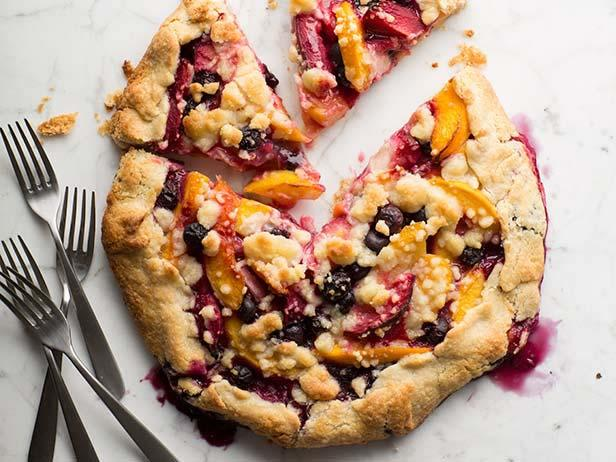

World's Healthiest Foods!
Summer Fruit Crostata

Level: Intermediate
Total: 1 hr 55 min |
Prep: 30 min
Inactive: 1hr 5 min
Cook: 20 min |
Yield: 6 Servings |
INGREDIENTS:
- 2 cups all-purpose flour
- 1/4 cup granulated or superfine sugar
- 1/2 teaspoon kosher salt
- 1/2 pound (2 sticks) cold unsalted butter, diced
- 6 tablespoons (3 ounces) ice water
For the filling (makes 1 crostata):
- 1 pound firm ripe peaches, peeled
- 1/2 pound firm ripe black plums, unpeeled
- 1/2 pint fresh blueberries
- 1/2 pint fresh blueberries
- 1 tablespoon plus 1/4 cup granulated sugar, divided
- 1/4 teaspoon grated orange zest
- 2 tablespoons freshly squeezed orange juice
- 1/4 teaspoon kosher salt
- 4 tablespoons (1/2 stick) cold unsalted butter, diced
DIRECTIONS:
for the pastry:
- Place the flour, sugar, and salt in the bowl of a food processor fitted with a steel blade.
Pulse a few times to combine.
- Add the butter and toss quickly (and carefully!) with your fingers
to coat each cube of butter with the flour. Pulse 12 to 15 times, or until the butter is the size
of peas.
- With the motor running, add the ice water all at once through the feed tube.
- Keep hitting the pulse button to combine, but stop the machine just before the dough comes together.
- Turn the dough out onto a well-floured board, roll it into a ball, cut in half, and form into 2 flat disks.
- Wrap the disks in plastic and refrigerate for at least 1 hour. (If you only need 1 disk of dough The
other disk of dough can be frozen.)
- Preheat the oven to 450 degrees F. Line a baking sheet with parchment paper.
- Roll the pastry into an 11-inch circle on a lightly floured surface. Transfer it to the baking sheet.
for the filling: (makes 2 crostatas)
- Put the peaches and plums in wedges and place them in a bowl with the blueberries.
- Toss them with 1 tablespoon of the flour, 1 tablespoon of the sugar, the orange zest, and the orange juice.
- Place the mixed fruit on the dough circle, leaving a 1 1/2-inch border.
- Combine the 1/4 cup flour, the 1/4 cup sugar, and the salt in the bowl of a food processor fitted with a steel blade.
- Add the butter and pulse until the mixture is crumbly.
- Pour into a bowl and rub it with your fingers until it starts to hold together.
- Sprinkle evenly over the fruit.
- Gently fold the border of the pastry over the fruit, pleating it to make an edge.
- Bake the crostata for 20 to 25 minutes, until the crust is golden and the fruit is tender.
- Let the crostata cool for 5 minutes, then use 2 large spatulas to transfer it to a wire rack.
- Serve warm or at room temperature.
* * *
Courtsey of Food Network :)